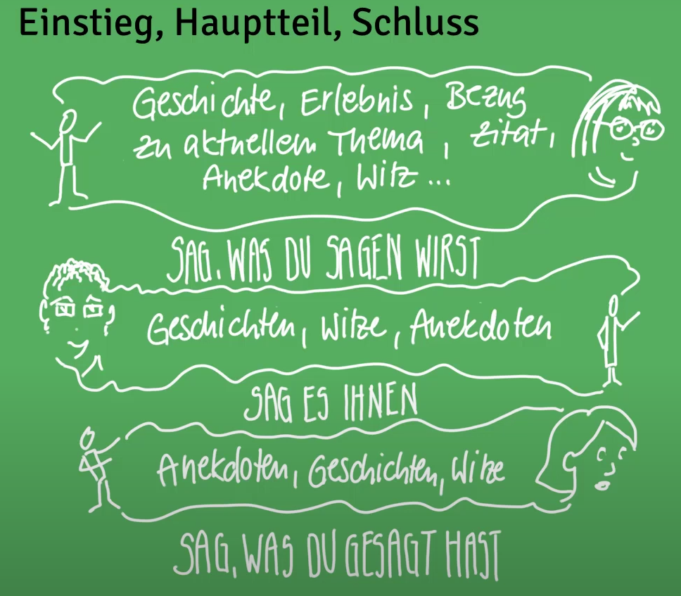

Software Labor Präsentation
Video 1: Äußerer Ramen in Präsentation
Äußerer Rahmen / äußere Struktur
Adressiert die W-Fragen:
- Warum?
- Wann?
- Wem?
- Was?
- Wie?
- Wo?
- …
Warum?
Zielsetzung der Präsentation
- Ziel formulieren
- Zielbereiche: Überzeugen & Informieren
Möchte ich Informieren und die Entscheidung dem Publikum überlassen, der möchte ich das Publikum von meiner Entscheidung überzeugen?
Wann?
Zeitpunkt & Dauer der Präsentation
- Mit oder ohne Diskussion?
- Was ist davor? Was danach?
- Zeit nutzen: Weder zu lange noch zu kurz reden
Wem?
Publikum der Präsentation
- Wer sind die Zuhörer*innen?
- Warum sind sie da?
- Publikumsorientierung: Zuhörer*innen dort abholen, wo sie stehen
(Wer genau sind unsere Zuhörer? Wahrscheinlich sollten die Dozierenden im Fokus stehen, da diese die Entscheidungskraft tragen.)
Was?
Inhalt der Präsentation
- Thema und Ziel bestimmen Inhalt und Struktur
- Selbstpräsentation
Unterschied zwischen Wie- & Ja-Nein-Aussagen
Wo?
Ort der Präsentation
- Eigenschaften des Raums z.B. Raumausstattung
Wie?
Art und Weise der Präsentation
- Methodik
- Stimme & Sprache
- Medieneinsatz
Allgemeine Spielregeln beachten. Wem? Muss vorher geklärt sein!
Video 2: Innerer Rahmen in Präsentationen
Innerer Rahmen / innere Struktur (Aufbau)
Struktur
Klar, einfach schnell, zwingend, d.h. das Eine ergibt sich aus dem Anderen, alles ist immer folgerichtig, Publikum kann folgen
Zu Vermeiden:
- Abschweifungen
- Ausschmückungen
- Polemik & Attacken
- Selbstabwertung (Bsp. “meine Wenigkeit”, Entschuldigung für Serverversagen in Form von “hätte ich besser vorbereiten müssen”)
Da das Publikum nicht die gesamte Zeit konzentriert zuhören kann, sind Auflockerungen sinnvoll:
alt text
Einleitung
Grundsätzliche Struktur:
- Thema nennen oder zeigen
- Selbstdarstellung
- Gliederung präsentieren
- Spielregeln verabreden
- Interesse wecken (Geschichte, Anekdote, Analogie, Metapher…)
Konkrete Methodik:
Vorspann zum Aufbau einer positiven Atmosphäre
- Komplimente an Vorredner*innen
- Witz, Anekdote. Zitat
- Persönliche Geschichte
- …
(Themenbezug nicht wichtig; Humor muss passend gewählt sein!)
Aufhänger zur Vorbereitung des Themas
- Themen-Vorbereitendes Zitat, Witz, etc.
- Persönlicher Erlebnisbericht
- Aktuelle Pressemitteilungen
- Vergleiche
- Gemeinsame Erfahrungen
- …
(Zitate, etc. müssen hierbei Bezug zum Thema haben)
Denkanreiz als direkter Einstieg in das Thema
- Themenstellung + Antwort
- Direkte Nennung der Hauptargumente
- Paradoxes Beispiel, rhetorische Frage + Antwort
- …
Status Quo zur Schilderung der Ausgangssituation, die zu verbessern ist
- Kurze Schilderung des Status quo + Hinweis auf Un-Tragbarkeit der Situation + Lösungsmöglichkeiten etc.
- Probleme und Lösungsideen aus Sicht der Zielgruppe aufgreifen
- …
(Probleme aus Sicht der Publikums betrachten)
Hauptteil
Können wir ganz unterschiedlich gestalten
Schluss
Grundsätzliche Struktur:
- Ende der Präsentation ankündigen
- Zusammenfassung
- Ausblick, Konsequenzen
- Brückenschlag zum Einstieg
- Positive Motivierung
Überzeugungskraft
 alt text
alt text
Ethos
- Kompetenz, die die Person ausstrahlt
- Integrität, meint die Person, was sie sagt?
- Wohlwollen, spricht der Person im eigenen oder in meinem Interesse?
Logos
- Sind die Inhalte überzeugend?
- Ist alles klar und verständlich formuliert?
- Ist alles folgerichtig?
negativ:
- Wirkt der Vortrag zusammengewürfelt?
- Ist der Schluss nicht nachvollziehbar?
Pathos
- Persönlichen Bezug zum Publikum schaffen
Video 3: Selbstpräsentation in Präsentationen
Die Selbstpräsentation
Teil der W-Frage Was? des äußeren Rahmens
Bei jeder Präsentation präsentiere ich automatisch mich selbst, meine Person und vor allem mein Auftreten.
Glaubwürdigkeit
Ethos als persönliche Glaubwürdigkeit
- Kompetenz: habe ich Ahnung von dem, was ich zeige und vorstelle
- Integrität: meine ich, was ich sage oder versuche ich etwas zu verschleiern oder anders darzustellen
- Wohlwollen: spreche ich im Sinne des Publikums, oder versuche ich, etwas zu verkaufen
- Authentizität: wirke ich wie ich selbst oder wirke ich verstellt?
Sprache
- Kürze & Prägnanz: “Eigentlich”, “Ich würde meinen…”, etc. vermeiden
- Angemessenheit der Sprache: Fachvokabular vor Kunden vermeiden, Gendern!, etc.
- Sinnvolle, bedachte Wortwahl: Klischees vermeidende, Lust- statt Frust-Worte, etc.
Körpersprache
Nonverbale Signale
- Körperstellung & Gestik: dem Publikum zugewandt, Gestiken im Einklang zum Gesagten, Hände in Körpermitte und offen
- Blickkontakt & Mimik: Publikum im Auge behalten, Publikum ansprechen, Blickfokus variieren
- Stimme & Pausen: Wichtige Punkte durch Betonung klar machen, Lautstärke an räumliche Gegebenheiten anpassen, passende Pausen machen
- Kleidung & Style: keine Jogginghose, TShirt, verstrubbelte Haare, angemessen Kleiden und Stylen
Sicherheit
im Auftreten gewinnen durch
- Planung und Vorbereitung
- Üben der Präsentation
- Feedback
Video 4: Medieneinsatz in Präsentationen
Der Medieneinsatz
Teil der W-Frage Wie? des äußeren Rahmens
Wahl der Medien
Soll Vortrag unterstützen und nicht ersetzen, außerdem sind die kein Füllmaterial
- Rahmen des Vortrags: Welche Kanäle möchte in ansprechen, was benötige ich um das Thema zu visualisieren und darstellen, passt das Medium zum Publikum
- Integration in den Ablauf: Kann ich Medium gut in den Ablauf integrieren?
- Anforderungen an Visualisierung: Was muss mein Medium leisten können?
Flipchart
In großen Räumen schwierig wegen Lesbarkeit
- Schrift & Lesbarkeit: Schriftgröße, Schriftsauberkeit, Groß- & Kleinschreibung
- Strukturierung durch Farben und Zeichen: + für positives, - für negatives, Haken fürs abhaken
- Benutzen des Flipcharts (z.B. interaktives Ergänzen)
Folien & Beamer
- Folien als Unterstützung des Vortrags
- Kernaussagen & Schlagworte
- Leserlichkeit, Überfrachtung & Zahlenfriedhöfe: Diagramme besser als reine Zahlen
- Attraktivität durch Bild & Farben: Einheitliche und durchdachte Gestaltung der Folie
- Animationen & Folien Striptease: Weniger ist meist mehr
- Folien-Schlachten (mind. 90 Sekunden pro Folie)
- Vermeiden: Folien ohne Nutzen